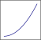
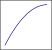
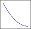
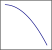

Two young mathematicians discuss how to sketch the graphs of functions.
Check out this dialogue between two calculus students (based on a true story):
Devyn
Riley, I’ve been thinking about the derivative.
Riley
It’s all about change. It’s some “change-detector” tool for math.
Devyn
I know! What’s crazy is that you can use it as a tool for sniffing out dirt on functions.
Riley
First tells us increasing or decreasing.
Devyn
Then tells us concavity.
Riley
From just that we know all local maxes and mins.
Devyn
And if we use limits, we can find any asymptotes!
Riley
You know, I’d like to make up a procedure based on all these facts, that would tell me what the graph of any function would look like.
Devyn
Me too! Let’s get to work!
On some interval, we know that is positive and is positive. Which of the following is the best option for the shape of the graph on that interval?




On some interval, we know that is negative and is positive. Which of the following is the best option for the shape of the graph on that interval?